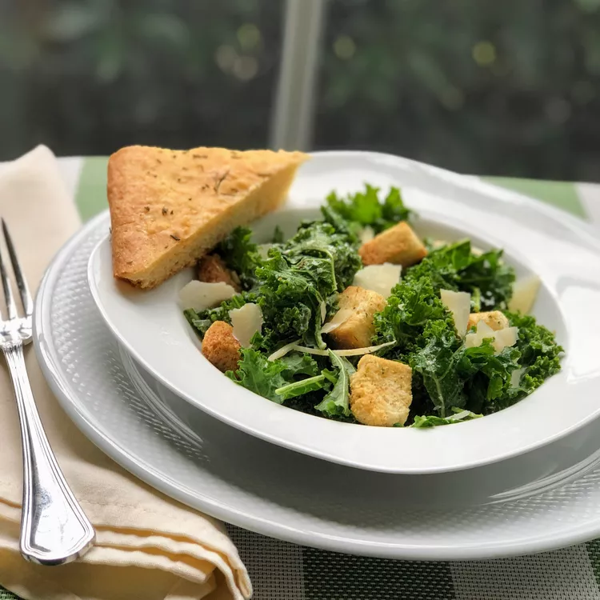

Traditional Caesar salad that uses kale instead of romaine! Makes 4 side-dish portions, but you can make it a main dish meal by topping it with a grilled protein, such as chicken or salmon! You may have leftover dressing, depending on how much you like. It keeps well in the refrigerator for up to a week.